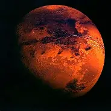

Mars (prononcé en français : /maʁs/) est la quatrième planète du Système solaire par ordre croissant de la distance au Soleil et la deuxième par ordre croissant de la taille et de la masse. Son éloignement au Soleil est compris entre 1,381 et 1,666 au (206,6 à 249,2 millions de kilomètres), elle a une période orbitale de 669,58 jours martiens (686,71 jours ou 1,88 année terrestre).
C’est une planète tellurique, comme le sont Mercure, Vénus et la Terre. Elle est environ dix fois moins massive que la Terre, mais dix fois plus massive que la Lune. Sa topographie présente des analogies aussi bien avec la Lune, à travers ses cratères et ses bassins d'impact, qu'avec la Terre, par ses formations d'origine tectonique et climatique telles que des volcans, des rifts, des vallées, des mesas, des champs de dunes et des calottes polaires. Le plus haut volcan du Système solaire, Olympus Mons (qui est un volcan bouclier), et le plus grand canyon, Valles Marineris, se trouvent sur Mars.
Mars a aujourd'hui perdu la presque totalité de son activité géologique interne, et seuls des événements mineurs surviendraient encore épisodiquement à sa surface, tels que des glissements de terrain, sans doute des geysers de dioxyde de carbone dans les régions polaires, peut-être des séismes, voire de rares éruptions volcaniques sous forme de petites coulées de lave
Pour plus d'information, cliquez ici